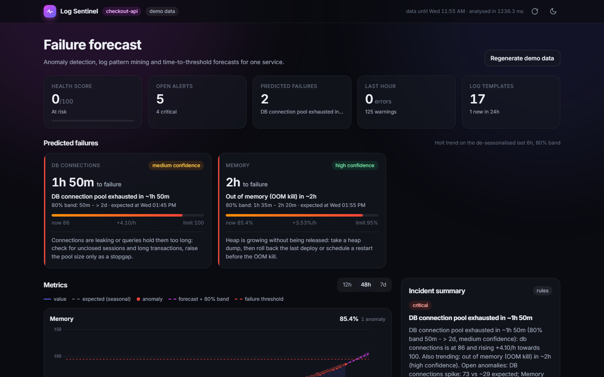

Predicts service failures hours before they happen
POST /api/metrics → 85,615 points/s detect seasonal + z-score + EWMA → precision 0.97 logmine "Connection pool wait <NUM>ms" → spiking x7 forecast db_connections → exhausted in ~1h 50m recall 1.00 on 50 injected incidents, 10 seeds
